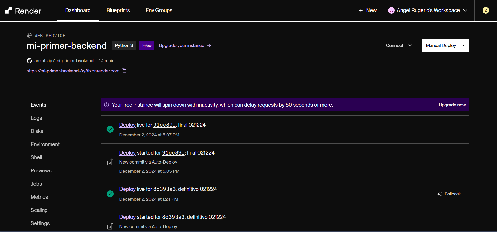

{Render}
-
Render es una página web, en la cual, al conectar con tu repositorio de GitHub, puedes realizar un deploy de tu página web para obtener un link y host gratis. Sin embargo, esto solo se puede si estás trabajando tu HTML con un backend.
{Vital}
-
{Create Account}
Primero que nada, tienes que crear una cuenta, y de forma preferente hacerlo con tu GitHub, así se detectan los repositorios de forma automática, haciendo todo más fácil. -
{Install Gunicorn}
Esta biblioteca de python nos va a ayudar a hacer el deploy posible. Para instalarlo, es tan simple como escribir "pip install guinicorn" en la terminal de tu proyecto. -
{Requirements.txt}
En este archivo, se ponen todas las bibliotecas que se utilizaron en el proyecto, para que Render pueda instalarlas y ejecutar el código de forma correcta. -
Si todo sale bien, ¡solo es cosa de elegir "Web Service" para publicar el sitio y esperar!
{Evidences}
- 